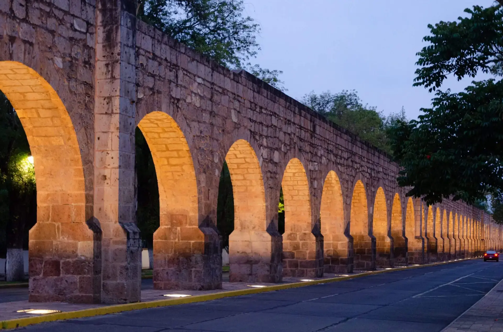

Monarca Drive previene accidentes por somnolencia y distracción utilizando Edge Computing y telemetría inercial. Desarrollado en Morelia para revolucionar las carreteras del mundo.
>95%
Precisión Val_Accuracy
20
FPS (Proceso Real)
468
Puntos Biométricos
0ms
Latencia de Nube
Monarca Drive no nació en una sala de juntas, sino como respuesta directa a una realidad dolorosa. Tras la pérdida de un familiar en un accidente causado por somnolencia al volante, surgió una pregunta fundamental: ¿Por qué la tecnología que salva vidas está reservada solo para vehículos de gama alta?
Desde los talleres del CBTis No. 149, canalizamos ese suceso hacia la ingeniería aplicada. Nuestro objetivo es democratizar el acceso a la seguridad vial mediante un sistema universal y de bajo costo.
Operando bajo un enfoque de procesamiento local ininterrumpido, el sistema utiliza una plataforma dual cuyo nodo central está basado en una Raspberry Pi 4. Este ecosistema de bajo costo democratiza la seguridad vial.
Telemetría Dinámica: Sensor inercial MPU-6050 para detectar volantazos y frenados bruscos.
Gestión Térmica Activa: Disipadores y ventilación para prevenir el thermal throttling.
Registro de Cabina: Pantalla OLED y escritura de bitácoras .csv en tiempo real.
Prototipo V7.4 Hardware Integrado
Colibrí IA es nuestro modelo de desarollo propio que reemplaza los obsoletos métodos de umbrales estáticos. Es el cerebro analítico que entiende la biometría humana en milisegundos.
Dos Redes Neuronales Convolucionales (CNN) binarias e independientes para evitar el choque de clases entre el estado ocular y el bucal.
Entrenado con 4,000 imágenes propietarias, aplicando undersampling para evitar falsos positivos en conductores con anteojos.
Pipeline asíncrono soportado por TensorFlow Lite que exprime los cuatro núcleos de la CPU para una experiencia libre de latencia.
El talento detrás del desarrollo de hardware, visión artificial y metodología de Monarca Technologies.
Fundador & Desarrollador
Estudiante de Mecatrónica en el CBTis No. 149. Arquitecto de hardware, programador de todas las versiones y creador del modelo Colibrí IA.
Asesor Técnico
Guía experta en la validación de la arquitectura de hardware, integración de componentes electrónicos y lógica de programación.
Asesor Metodológico
Supervisión de la investigación, estructura del proyecto y alineación con los estándares científicos y académicos.